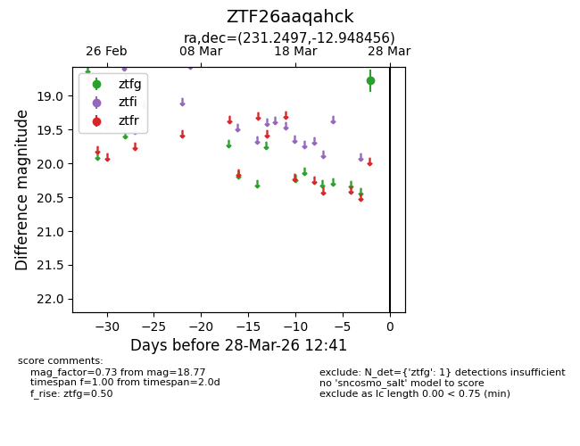
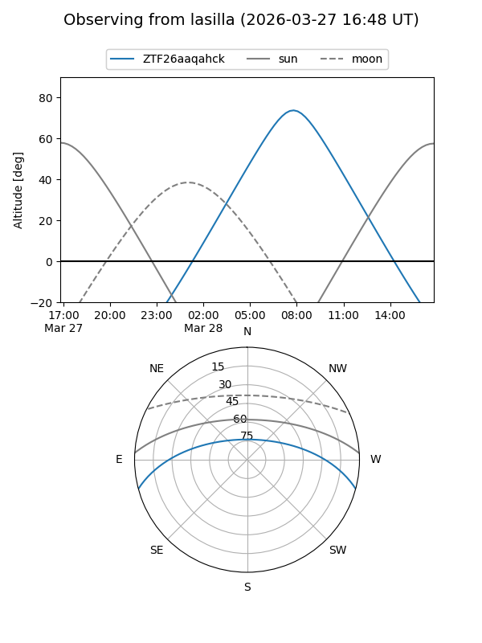
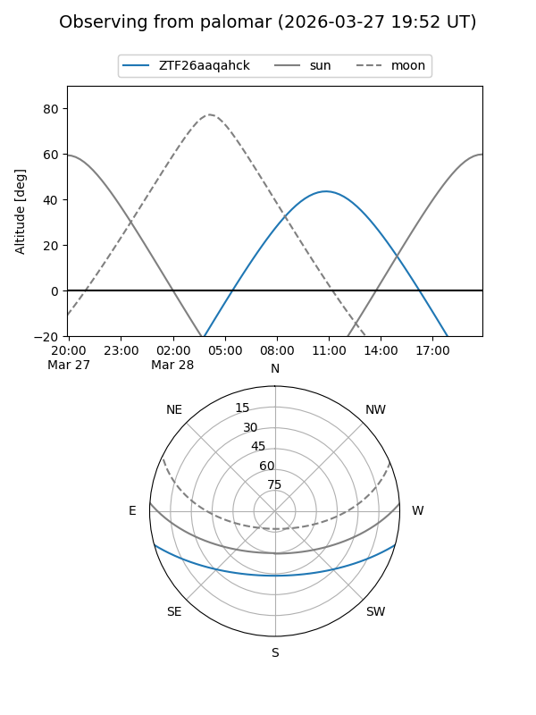

ZTF26aaqahck
Target ZTF26aaqahck at 2026-03-28 12:46
Aliases and brokers:
FINK: link
Lasair: link
ALeRCE: link
alt names
ZTF26aaqahck (ztf,fink_ztf)
Coordinates:
equatorial (ra, dec) = 231.2497,-12.94846
equatorial (HMS+DMS) = 15:24:59.92,-12:56:54.44
galactic (l, b) = (350.7864,+35.28614)
Flags:
Photometry:
last ztfg=18.77
1 ztfg detections
Lightcurve

Visibility


Additional plots